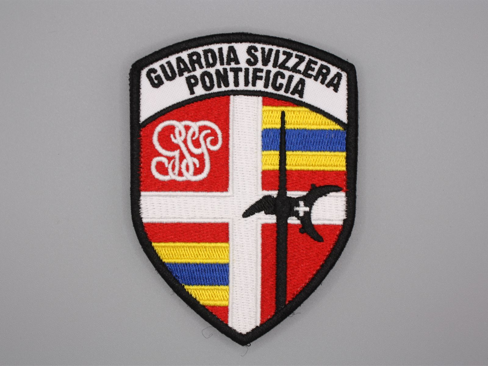

Embroidered
Public bodies and institutions
Institutional crest on a twill base
- Twill base
- Merrowed border
- Sew-on backing
Crest with fine details and lettering in polyester thread. Sample validated before batch production.